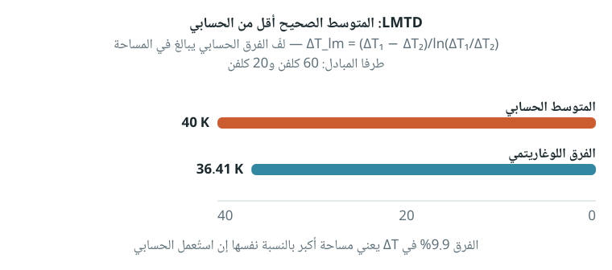

فرق الحرارة اللوغاريتمي المتوسط
Log mean temperature difference
فرق الحرارة اللوغاريتمي المتوسط LMTD هو الفرق الفعّال الذي يحكم نقل الحرارة في مبادل حراري عندما تتغيّر حرارة المائعین على طوله: ΔT_lm = (ΔT₁ − ΔT₂)/ln(ΔT₁/ΔT₂). ويُستعمل في q = U·A·ΔT_lm بدل الفرق الحسابي البسيط، لأنه يعطي الفرق الصحيح المكافئ.
في المبادل الحراري لا تبقى حرارة المائعین ثابتة: كلاهما يتغيّر على الطول، فيتغيّر فرق الحرارة بينهما من طرف إلى طرف. ولو استُعمل المتوسط الحسابي لأُخطئ في الحساب، لأن النقل يتناسب مع الفرق لا مع متوسطه الخطي. والفرق اللوغاريتمي هو المتوسط الصحيح رياضياً، وهو دائماً أصغر من المتوسط الحسابي. مثال: مبادل تدفق متعاكس، ΔT₁ = 60 K عند طرف وΔT₂ = 20 K عند الطرف الآخر: ΔT_lm = (60 − 20)/ln(60/20) = 40/1.0986 = 36.4 K، بينما المتوسط الحسابي 40 K، أي أن اللوغاريتمي أصغر بنحو 9%.
كيف تعمل الظاهرة؟
في المبادل الحراري يتناقص فرق الحرارة بين المائعین على الطول لأن المائع الساخن يبرد والبارد يسخن. ومعدل النقل عند كل موضع يتناسب مع الفرق المحلي، فإذا كان الفرق كبيراً في البداية انتقلت حرارة أكثر، ثم يقل النقل تدريجياً. والنتيجة أن التوزيع ليس خطياً بل أُسّياً، لأن نقصان الفرق يتناسب مع الفرق نفسه. ولهذا يكون المتوسط الصحيح هو متوسط أُسّي، وهو اللوغاريتمي، لا المتوسط الحسابي.
العلاقة بالأرقام
ΔT_lm = (ΔT₁ − ΔT₂)/ln(ΔT₁/ΔT₂). وعند ΔT₁ = ΔT₂ يصبح التعبير 0/0 ويُستبدل بالحدّ ΔT₁. ونسبة ΔT_lm إلى المتوسط الحسابي تنخفض مع زيادة عدم التماثل: عند نسبة 3 تكون 0.910، وعند نسبة 10 تكون 0.390/0.495 = 0.788، وعند نسبة 100 تكون 0.215/0.505 = 0.426. ولهذا لا يجوز إهمال التصحيح في المبادلات ذات الفروق المتباينة.
مفاهيم متقاربة
يُفرَّق بين ΔT_lm والمتوسط الحسابي: الأول هو الصحيح للنقل والثاني تقريب سريع يبالغ. ويُفرَّق بين ΔT_lm ومعامل التصحيح F: الأول للتدفق المتعاكس التام، والثاني يُضرب فيه للمبادلات المتقاطعة. ويُفرَّق بين ΔT_lm وفرق الحرارة عند المدخل: الأول متوسط فعّال والثاني قيمة موضعية. وأخيراً يُفرَّد بين ΔT_lm في التصميم وΔT_lm في الفحص، حيث يُقاس الثاني من حرارات مقيسة لا محسوبة.
حدود التطبيق
ΔT_lm لا يصلح عندما يتغيّر معامل U تغيّراً كبيراً على الطول، كما في المكثّفات والمبخّرات حيث يحدث تبدّل طور. ولا يصلح في المبادلات ذات التدفق المتقاطع بلا معامل تصحيح. ولا يصلح عند تقارب الفرقين إلى الصفر حيث يصبح الحساب غير مستقر عددياً. ولا يصف الحالات العابرة حيث تتغيّر الحرارات مع الزمن. وأخيراً لا يعطي توزيع الحرارة على الطول، بل المتوسط المكافئ فقط.

| الكمية | القيمة | المصدر |
|---|---|---|
| الفرق اللوغاريتمي للمثال | 36.41 K | [1] |
| المتوسط الحسابي للمقارنة | 40.0 K | [1] |
| الحمل الحراري الناتج | 36410 W | [1] |
المصادر
- 1 Overall Heat Transfer Coefficient: Definitions, Values & Applications — The Engineering ToolBox (2026). www.engineeringtoolbox.com/overall-heat-transfer-coefficient-d_434.html · اطُّلع عليه 2026-11-22
- 2 Thermal Conductivity of Common Materials - Solids, Liquids and Gases — The Engineering ToolBox (2026). www.engineeringtoolbox.com/thermal-conductivity-d_429.html · اطُّلع عليه 2026-11-22
استشهد بهذا المصطلح
الصيغتان مبنيتان من بيانات الصفحة نفسها: العنوان والتاريخ ورابط النسخة المنشورة.
فرق الحرارة اللوغاريتمي المتوسط — Log mean temperature difference. (2026). ديوان المعرفة — انفراد. https://infiradev.com/diwan/terms/term-heat-exchanger-lmtd.html
@misc{term-heat-exchanger-lmtd2026,
title = {فرق الحرارة اللوغاريتمي المتوسط},
titleaddon = {Log mean temperature difference},
howpublished = {{ديوان المعرفة — انفراد} — مرجع علمي عربي},
year = {2026},
url = {https://infiradev.com/diwan/terms/term-heat-exchanger-lmtd.html},
urldate = {2026-11-22},
note = {مراجعة علمية: تحرير انفراد الآلي — نُشر بأمر عبدالله الهويدي}
}
راجعه: تحرير انفراد الآلي — نُشر بأمر عبدالله الهويدي · 2026-11-22 · آخر تحديث 2026-11-22